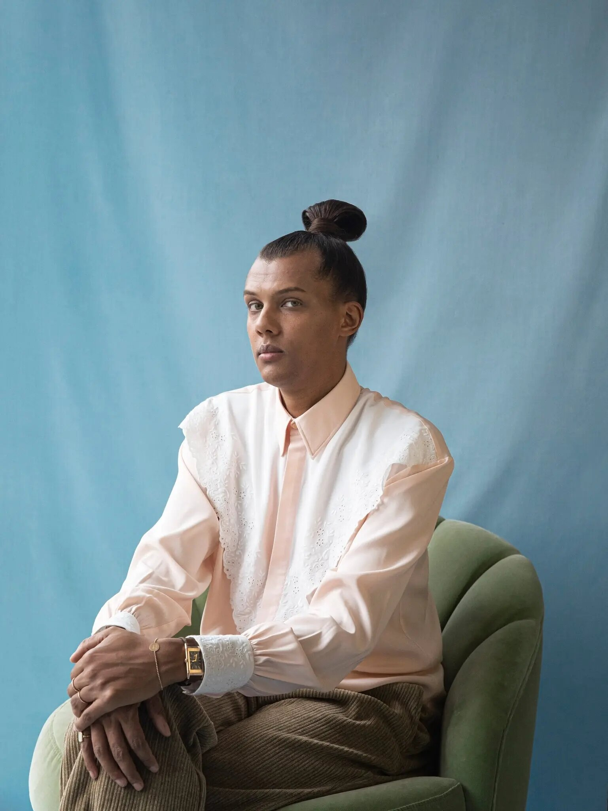
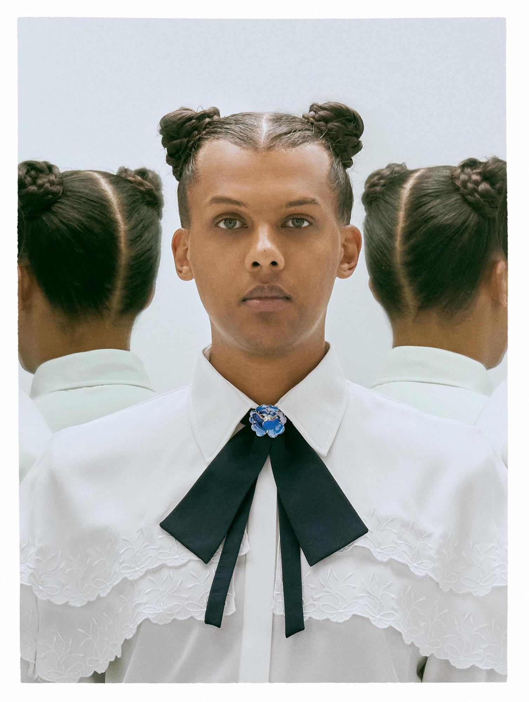

Timzine > Actualités > Musique > Stromae et “Multitude”: Qu’attendre de ce nouvel album?
Stromae et
"Multitude":
Qu'attendre de ce nouvel album?

Neuf ans après la sortie de Racine carrée, Stromae rompra le silence le 4 mars prochain avec un troisième album en carrière. Dimanche dernier, le Belge faisait les manchettes en transformant une entrevue au Journal de 20 h à la chaîne TF1 en performance musicale pour présenter son tout nouveau simple L’enfer, qui aborde ses « pensées suicidaires / Et j’en suis peu fier / On croit parfois que c’est la seule manière de les faire taire / Ces pensées qui me font vivre un enfer ». Qu’est-ce qu’on l’attend, cet album !
L'Attente
enfin finie
Dans Multitude, Stromae évoque différents sujets, du féminisme à la paternité en passant par la crise du couple ou les idées noires. Au total, cet album dure 35 minutes, explique Le Parisien et mélange différents styles musicaux, inspirés par de multiples cultures du monde. Concernant le titre de son album, Stromae en a expliqué la signification à Anne-Claire Coudray dans le JT de TF1 : “Je pense qu’on est tous multiples, on a plein de personnages et de personnalités différentes, on n’est pas résumé à un carcan ni une case.” Inspiré par sa vie, ses voyages et sa mixité, l’interprète de Papaoutai promet “des grooves différents”. “J’adore mélanger les choses. L’idée, c’était vraiment de prendre des inspirations partout sans pointer un pays du doigt”, détaillait-il au 20 Heures.
Après 7 ans d'absence,
le grand retour
Mardi 22 février, l'artiste belge a donné son tout premier concert depuis son dernier album au Palais 12, à Bruxelles, sa ville natale.
De quoi donner un nouvel aperçu de ce que sera Multitude, dont il a interprété au total sept titres. Santé et L'enfer bien sûr, mais aussi cinq autres titres présents sur l'album :
Invaincu, Fils de joie, Quand c'est qu'on c'est, Mauvaise journée / Bonne journée et Mon amour. Pour le reste de Multitude, il faudra patienter jusqu'au 4 mars...
Les 9000 personnes (chiffre fourni par son label Mosaert et son tourneur Auguri) au Palais 12, complexe de spectacles de Bruxelles, exultent quand il appuie sur le mot «Invaincu»,
dans un halo de lumière, pour la première chanson de son concert.
Invaincu est donc son hymne à la vie après son burn-out, prolongement d’une tournée mondiale marathon qui l’avait essoré physiquement et mentalement en 2015
(avec pour facteur aggravant les effets indésirables d’un médicament antipaludique).
Une dépression, escortée par des «pensées suicidaires», narrée sans fard dans L’enfer, titre déjà connu. Mais mardi soir à Bruxelles, même si certains textes sont toujours sombres,
l’électro chaloupée emporte tout. Et l’humeur est au bonheur des retrouvailles entre l’artiste (37 ans cette année) et son public.
Stromae et
les Victoires de la Musique
Stromae sur scène, à la télévision française. Après de longues années d'absence, le chanteur belge a fait son retour à la télévision française le vendredi 11 février,
en tant que président d'honneur de la 37ème cérémonie des Victoires de la musique. Il s'est produit à cette occasion sur la scène de la Seine Musicale de Boulogne-Billancourt
et a interprété le single Santé.
Le chanteur a ouvert la soirée avec une superbe performance, d'abord animée en tuto pour apprendre la chorégraphie de Santé, single extrait de son prochain album, qu'il a ensuite
interprété sur la scène des Victoires entouré de ses musiciens. Cet avatar fera d'ailleurs partie de ses prochains concerts. Le Belge est ensuite apparu pour remettre le trophée
d'Artiste de l'année à Orelsan.
La prestation de Stromae donne un avant-goût du lancement de sa tournée-évènement fin février, qui devrait s'articuler autour de tableaux et faire appel aux nouvelles technologies,
selon ce qu'il laisse filtrer au compte-goutte.
La tournée
-Stromae
-
Lisbonne - Portugal
NOS Alive Festival - 6 juillet 2022 -
Milan - Italie
Milano Summer Festival - 20 juillet 2022 -
Paris
Rock en Seine - 28 août 2022 -
Munich - Allemagne
Superbloom Festival - 04 septembre 2022 -
Bruxelles - Belgique
Palais 12 - 15, 16 et 17 mars 2023